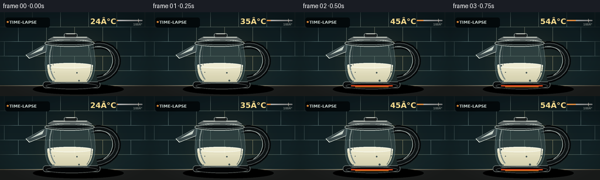
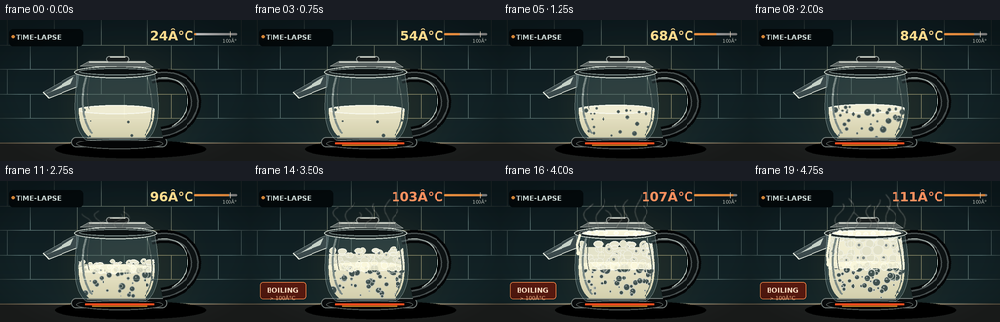

CODING AGENTS AS PIXEL WORLD MODELS
traex/GPT-5.6-Sol · phygen_107
点击播放 · 原生 RGB 像素
逐轮保存的候选
回放视频、检查图与代码变化。
每份候选均可单独播放。实际图片检查记录在下方工具轨迹中。
候选 01播放与检查图
点击播放 · 原生 RGB 像素


展开代码变化
--- 上一保存版本
+++ 本次保存版本
@@ -0,0 +1,246 @@
+from pathlib import Path
+import math
+import numpy as np
+from PIL import Image, ImageDraw, ImageFont, ImageFilter
+import artifact_io
+
+# Procedural, text-only animation of milk heating in a glass electric kettle.
+W, H, N = 256, 144, 20
+SS = 3
+w, h = W*SS, H*SS
+rng = np.random.default_rng(107)
+
+def P(v): return int(round(v*SS))
+def pts(seq): return [(P(x), P(y)) for x,y in seq]
+def font(size, bold=False):
+ path = "/usr/share/fonts/truetype/dejavu/DejaVuSans-Bold.ttf" if bold else "/usr/share/fonts/truetype/dejavu/DejaVuSans.ttf"
+ return ImageFont.truetype(path, P(size))
+
+def ellipse(draw, box, fill=None, outline=None, width=1):
+ draw.ellipse(tuple(P(x) for x in box), fill=fill, outline=outline, width=P(width))
+def rectangle(draw, box, fill=None, outline=None, width=1, radius=0):
+ b=tuple(P(x) for x in box)
+ if radius: draw.rounded_rectangle(b, radius=P(radius), fill=fill, outline=outline, width=P(width))
+ else: draw.rectangle(b, fill=fill, outline=outline, width=P(width))
+def line(draw, xy, fill, width=1, joint="curve"):
+ draw.line(pts(xy), fill=fill, width=P(width), joint=joint)
+
+def cubic(p0,p1,p2,p3,n=40):
+ out=[]
+ for t in np.linspace(0,1,n):
+ u=1-t
+ out.append((u**3*p0[0]+3*u*u*t*p1[0]+3*u*t*t*p2[0]+t**3*p3[0],
+ u**3*p0[1]+3*u*u*t*p1[1]+3*u*t*t*p2[1]+t**3*p3[1]))
+ return out
+
+# Fixed bubble field gives stable, coherent upward motion rather than frame noise.
+bubbles=[]
+for _ in range(78):
+ bubbles.append(dict(x=float(rng.uniform(84,156)), y0=float(rng.uniform(88,121)),
+ r=float(rng.uniform(1.0,3.7)), speed=float(rng.uniform(11,27)),
+ phase=float(rng.uniform(0,1)), wob=float(rng.uniform(0.4,2.0))))
+foamseeds=[]
+for _ in range(72):
+ foamseeds.append((float(rng.uniform(80,159)), float(rng.uniform(0,1)), float(rng.uniform(1.5,4.4)), float(rng.uniform(0,6.28))))
+
+def vessel_bounds(y):
+ # approximate inner glass bounds for particles
+ q=max(0,min(1,(y-54)/68))
+ return 80-2*q, 158+2*q
+
+def make_frame(i):
+ t=i/(N-1)
+ # Fast asymptotic temperature ramp, crossing boiling point in the last quarter.
+ temp=24 + 87*(1-math.exp(-2.35*t))/(1-math.exp(-2.35))
+ heat=max(0,min(1,(temp-55)/55))
+ boil=max(0,min(1,(temp-94)/17))
+ im=Image.new("RGBA",(w,h),(10,17,20,255)); d=ImageDraw.Draw(im,"RGBA")
+
+ # Kitchen backsplash: deep teal tile, cool at top and warm beside the element.
+ for yy in range(h):
+ y=yy/SS
+ if y<126:
+ f=y/126
+ col=(int(12+8*f),int(25+12*f),int(29+11*f),255)
+ else:
+ f=(y-126)/18
+ col=(int(28+12*f),int(32+9*f),int(32+7*f),255)
+ d.line([(0,yy),(w,yy)],fill=col)
+ # tiles and soft under-cabinet glow
+ for yline in (25,50,75,100,125): line(d,[(0,yline),(256,yline)],(91,118,118,22),.5)
+ for xline in range(7,270,48): line(d,[(xline,0),(xline,25)],(99,124,124,18),.5)
+ for xline in range(-17,270,48): line(d,[(xline,25),(xline,50)],(99,124,124,18),.5)
+ for xline in range(7,270,48): line(d,[(xline,50),(xline,75)],(99,124,124,18),.5)
+ for xline in range(-17,270,48): line(d,[(xline,75),(xline,100)],(99,124,124,18),.5)
+ # vignette/light cone
+ glow=Image.new("RGBA",(w,h),(0,0,0,0)); gd=ImageDraw.Draw(glow,"RGBA")
+ ellipse(gd,(56,20,206,151),(207,170,93,18))
+ glow=glow.filter(ImageFilter.GaussianBlur(P(22))); im=Image.alpha_composite(im,glow); d=ImageDraw.Draw(im,"RGBA")
+ # counter seam and kettle shadow
+ rectangle(d,(0,126,256,144),(29,31,30,255)); line(d,[(0,126),(256,126)],(155,139,111,60),1)
+ ellipse(d,(56,123,211,141),(0,0,0,90))
+
+ # Temperature overlay, designed like a documentary timelapse readout.
+ rectangle(d,(9,9,85,26),(3,9,11,155),radius=4)
+ d.text((P(16),P(13)),"TIME-LAPSE",font=font(7,True),fill=(221,235,231,220),stroke_width=0)
+ ellipse(d,(11.5,15,14.5,18),(246,154,62,255))
+ d.text((P(198),P(8)),f"{temp:3.0f}°C",font=font(13,True),anchor="ra",fill=(255,220 if temp<100 else 145,142 if temp<100 else 95,255))
+ # thin temperature progress line, explicit 100 C threshold
+ rectangle(d,(199,13,243,15),(255,255,255,40),radius=1)
+ fillx=199+44*max(0,min(1,(temp-20)/95))
+ rectangle(d,(199,13,fillx,15),(245,149,65,230),radius=1)
+ marker=199+44*(100-20)/95
+ line(d,[(marker,11.5),(marker,17)],(255,240,216,190),.7)
+ d.text((P(marker-1),P(18)),"100°",font=font(5),anchor="ma",fill=(218,224,216,150))
+
+ # Heating base with progressively orange element.
+ rectangle(d,(73,119,171,130),(9,11,12,255),outline=(113,122,119,150),width=1,radius=5)
+ ellipse(d,(78,121,167,132),(4,5,6,255),outline=(85,91,89,200),width=1)
+ if temp>45:
+ alpha=int(55+125*heat)
+ line(d,[(87,126),(158,126)],(255,77,30,alpha),2)
+ line(d,[(94,128),(151,128)],(255,159,45,alpha//2),1)
+
+ # Handle behind the glass vessel: glossy black heat-resistant plastic.
+ handle_curve=cubic((155,58),(207,45),(217,107),(166,115),45)
+ line(d,handle_curve,(3,5,6,245),13)
+ line(d,handle_curve,(70,78,78,210),8)
+ line(d,handle_curve,(13,18,19,255),5)
+ hi=cubic((162,59),(197,54),(201,95),(176,108),32)
+ line(d,hi,(171,183,177,90),1)
+
+ # Spout behind body, triangular glass/steel silhouette.
+ spout=[(81,54),(71,58),(44,73),(49,79),(79,68)]
+ d.polygon(pts(spout),fill=(59,74,76,175),outline=(173,186,181,210))
+ d.polygon(pts([(75,58),(51,73),(48,74),(72,65)]),fill=(198,209,199,75))
+ line(d,[(44,73),(50,79),(78,68)],(225,230,219,130),1)
+
+ # Glass body shell.
+ outer=[(79,51)] + cubic((79,51),(79,70),(70,108),(88,122),22) + [(150,122)] + cubic((150,122),(169,108),(161,69),(158,51),22)
+ shell=Image.new("RGBA",(w,h),(0,0,0,0)); sd=ImageDraw.Draw(shell,"RGBA")
+ sd.polygon(pts(outer),fill=(75,103,106,92),outline=(189,207,201,210))
+ # Inner volume mask
+ mask=Image.new("L",(w,h),0); md=ImageDraw.Draw(mask)
+ inner=[(82,56)] + cubic((82,56),(82,75),(75,106),(91,119),20)+[(148,119)]+cubic((148,119),(163,107),(158,75),(155,56),20)
+ md.polygon(pts(inner),fill=255)
+
+ # Milk body, calm level below with warmer shadows near base.
+ surface_y=91-2.0*heat-4.0*boil
+ milk=Image.new("RGBA",(w,h),(0,0,0,0)); ma=np.zeros((h,w,4),dtype=np.uint8)
+ maskarr=np.asarray(mask)
+ for yy in range(P(surface_y),P(121)):
+ logical_y=yy/SS
+ shade=max(0,min(1,(logical_y-surface_y)/(121-surface_y+1)))
+ ma[yy,:,0]=int(244-26*shade); ma[yy,:,1]=int(239-27*shade); ma[yy,:,2]=int(210-35*shade); ma[yy,:,3]=(maskarr[yy]*0.95).astype(np.uint8)
+ milk=Image.fromarray(ma,"RGBA")
+ mdraw=ImageDraw.Draw(milk,"RGBA")
+ # Surface ellipse becomes agitated with gentle vertical oscillation.
+ ellipse(mdraw,(79,surface_y-4,159,surface_y+5),(252,249,222,238),outline=(255,255,244,245),width=1)
+ # Subsurface bubble convection. Stable seeds drift upward according to time and heat.
+ active=int(7+60*heat)
+ for k,b in enumerate(bubbles[:active]):
+ age=(t*1.35+b['phase'])%1.0
+ yy=b['y0']-b['speed']*age*heat
+ xx=b['x']+math.sin(age*8+b['phase']*9)*b['wob']
+ if yy<surface_y+1: yy=surface_y+2+(b['y0']-surface_y-2)*((age+.43)%1)
+ left,right=vessel_bounds(yy); xx=max(left+2,min(right-2,xx))
+ rr=b['r']*(.55+.7*age)*(.55+.55*heat)
+ ellipse(mdraw,(xx-rr,yy-rr,xx+rr,yy+rr),(255,253,229,22),outline=(255,255,242,int(45+145*heat)),width=.65)
+ if rr>2.3: ellipse(mdraw,(xx-rr*.35,yy-rr*.48,xx,yy-rr*.15),(255,255,255,int(50+80*heat)))
+ # clip body particles back to interior
+ alpha=np.array(milk.getchannel("A"),dtype=np.uint8)
+ alpha=np.minimum(alpha,maskarr)
+ milk.putalpha(Image.fromarray(alpha,"L"))
+ shell=Image.alpha_composite(shell,milk)
+
+ # Froth rises rapidly as milk passes its boiling point.
+ if temp>88:
+ foam=Image.new("RGBA",(w,h),(0,0,0,0)); fd=ImageDraw.Draw(foam,"RGBA")
+ fprog=max(0,min(1,(temp-88)/23))
+ foam_top=surface_y-(2+26*(fprog**1.6))
+ # creamy foam bulk
+ rectangle(fd,(78,foam_top+2,161,surface_y+4),(247,244,216,int(170+75*fprog)))
+ # uneven cap made of interlocked bubbles
+ nfoam=int(9+56*fprog)
+ for j,(x,u,r,ph) in enumerate(foamseeds[:nfoam]):
+ band=(j%5)/4
+ yy=foam_top+band*(surface_y-foam_top+1)+1.7*math.sin(ph+i*.48)
+ rr=r*(.65+.55*fprog)
+ ellipse(fd,(x-rr,yy-rr,x+rr,yy+rr),(251,248,220,225),outline=(255,255,241,235),width=.65)
+ if j%3==0:
+ ellipse(fd,(x-rr*.35,yy-rr*.42,x+rr*.18,yy+rr*.12),(255,255,255,95))
+ # vigorous domes at surface
+ for j in range(int(2+8*fprog)):
+ x=85+((j*17.3+i*3.1)%69)
+ rr=2.3+2.8*((j*.37+i*.11)%1)
+ y=foam_top+math.sin(j*2+i*.75)*2
+ ellipse(fd,(x-rr,y-rr*.55,x+rr,y+rr*.7),(252,249,222,230),outline=(255,255,246,245),width=.8)
+ falpha=np.minimum(np.array(foam.getchannel("A"),dtype=np.uint8),maskarr)
+ foam.putalpha(Image.fromarray(falpha,"L")); shell=Image.alpha_composite(shell,foam)
+
+ # glass reflections over liquid
+ sd=ImageDraw.Draw(shell,"RGBA")
+ line(sd,cubic((88,58),(82,76),(83,103),(94,115),34),(239,255,249,115),2)
+ line(sd,cubic((91,58),(88,73),(89,86),(91,91),22),(255,255,255,55),.7)
+ line(sd,cubic((151,58),(158,82),(158,105),(148,117),30),(202,225,218,75),1)
+ line(sd,[(89,120),(149,120)],(234,232,206,130),1)
+ im=Image.alpha_composite(im,shell); d=ImageDraw.Draw(im,"RGBA")
+
+ # Rim/lid and kettle collar, in front of the contents.
+ ellipse(d,(76,47,161,59),(31,39,39,235),outline=(210,220,211,230),width=1)
+ ellipse(d,(81,49,157,56),(12,17,18,240),outline=(122,137,134,220),width=1)
+ # interior milk glimpsed through opening only in extreme froth stage
+ if boil>.66:
+ ellipse(d,(84,50,155,56),(249,246,219,int(150+100*boil)),outline=(255,255,243,220),width=1)
+ for j in range(7):
+ x=91+j*9.1+2*math.sin(i+j)
+ ellipse(d,(x-2,51+math.sin(j+i*.6),x+2.7,55+math.sin(j+i*.6)),(255,253,229,230),outline=(255,255,249,245),width=.5)
+ # lid and knob
+ d.polygon(pts([(82,47),(91,42),(148,42),(157,48)]),fill=(86,95,94,245),outline=(211,217,208,225))
+ line(d,[(91,43),(148,43)],(235,238,225,180),1)
+ rectangle(d,(109,36,132,43),(25,30,30,255),outline=(145,153,149,220),width=1,radius=3)
+ line(d,[(113,37),(128,37)],(220,224,213,100),1)
+
+ # Overflow bead as the foam reaches the lip, a recognizable milk boil-over cue.
+ if boil>.70:
+ q=(boil-.70)/.30
+ # pale rivulet starts under the left rim
+ line(d,[(82,54),(79,62+13*q),(80,71+16*q)],(251,248,220,int(170+75*q)),2.3)
+ ellipse(d,(78.2,68+15*q,81.7,72+15*q),(250,247,219,int(190+60*q)))
+
+ # Steam: animated translucent strands grow denser after ~85 C.
+ steam=max(0,min(1,(temp-79)/28))
+ if steam>0:
+ st=Image.new("RGBA",(w,h),(0,0,0,0)); td=ImageDraw.Draw(st,"RGBA")
+ count=1+int(7*steam)
+ for j in range(count):
+ base=91+j*9.3+(j%2)*2
+ top=47-(18+17*((j*.31+.4)%1))*steam
+ phase=i*.48+j*1.37
+ path=[]
+ for k in range(25):
+ u=k/24
+ y=48-u*(48-top)
+ x=base+math.sin(u*6.0+phase)*(1.2+4.0*u)+math.sin(u*2.2+phase*.5)*2
+ path.append((x,y))
+ alpha=int(28+78*steam)
+ line(td,path,(237,242,231,alpha),1.0+0.45*steam)
+ st=st.filter(ImageFilter.GaussianBlur(P(.55)))
+ im=Image.alpha_composite(im,st); d=ImageDraw.Draw(im,"RGBA")
+
+ # Small status label appears only at the physical transition.
+ if temp>=100:
+ rectangle(d,(10,103,57,120),(86,25,15,185),outline=(255,140,75,170),width=.7,radius=3)
+ d.text((P(33.5),P(107)),"BOILING",font=font(7,True),anchor="ma",fill=(255,225,197,255))
+ d.text((P(33.5),P(116)),"> 100°C",font=font(5.5),anchor="ma",fill=(255,190,143,230))
+
+ # foreground glints and subtle vignette
+ vig=Image.new("RGBA",(w,h),(0,0,0,0)); va=np.zeros((h,w,4),dtype=np.uint8)
+ yy,xx=np.mgrid[0:h,0:w]; nx=(xx-w/2)/(w/2); ny=(yy-h/2)/(h/2)
+ a=np.clip((nx*nx+ny*ny-.72)*55,0,42).astype(np.uint8); va[:,:,3]=a
+ vig=Image.fromarray(va,"RGBA"); im=Image.alpha_composite(im,vig)
+ return np.asarray(im.convert("RGB").resize((W,H),Image.Resampling.LANCZOS),dtype=np.uint8)
+
+frames=np.stack([make_frame(i) for i in range(N)],axis=0)
+artifact_io.save(frames, Path(__file__).resolve().parent)
+print("saved",frames.shape,frames.dtype,"range",frames.min(),frames.max())
候选 02播放与检查图
点击播放 · 原生 RGB 像素

展开代码变化
--- 上一保存版本
+++ 本次保存版本
@@ -84,14 +84,14 @@
rectangle(d,(9,9,85,26),(3,9,11,155),radius=4)
d.text((P(16),P(13)),"TIME-LAPSE",font=font(7,True),fill=(221,235,231,220),stroke_width=0)
ellipse(d,(11.5,15,14.5,18),(246,154,62,255))
- d.text((P(198),P(8)),f"{temp:3.0f}°C",font=font(13,True),anchor="ra",fill=(255,220 if temp<100 else 145,142 if temp<100 else 95,255))
+ d.text((P(198),P(8)),f"{temp:3.0f}\u00b0C",font=font(13,True),anchor="ra",fill=(255,220 if temp<100 else 145,142 if temp<100 else 95,255))
# thin temperature progress line, explicit 100 C threshold
rectangle(d,(199,13,243,15),(255,255,255,40),radius=1)
fillx=199+44*max(0,min(1,(temp-20)/95))
rectangle(d,(199,13,fillx,15),(245,149,65,230),radius=1)
marker=199+44*(100-20)/95
line(d,[(marker,11.5),(marker,17)],(255,240,216,190),.7)
- d.text((P(marker-1),P(18)),"100°",font=font(5),anchor="ma",fill=(218,224,216,150))
+ d.text((P(marker-1),P(18)),"100\u00b0",font=font(5),anchor="ma",fill=(218,224,216,150))
# Heating base with progressively orange element.
rectangle(d,(73,119,171,130),(9,11,12,255),outline=(113,122,119,150),width=1,radius=5)
@@ -232,7 +232,7 @@
if temp>=100:
rectangle(d,(10,103,57,120),(86,25,15,185),outline=(255,140,75,170),width=.7,radius=3)
d.text((P(33.5),P(107)),"BOILING",font=font(7,True),anchor="ma",fill=(255,225,197,255))
- d.text((P(33.5),P(116)),"> 100°C",font=font(5.5),anchor="ma",fill=(255,190,143,230))
+ d.text((P(33.5),P(116)),"> 100\u00b0C",font=font(5.5),anchor="ma",fill=(255,190,143,230))
# foreground glints and subtle vignette
vig=Image.new("RGBA",(w,h),(0,0,0,0)); va=np.zeros((h,w,4),dtype=np.uint8)
可观测工具轨迹
实际执行的命令与返回图片。
命令 1exit 0
/bin/bash -lc "cat prompt.txt && printf '\\n---RULES---\\n' && cat GENERATION_RULES.md && printf '\\n---SPEC---\\n' && cat task_spec.json"
命令 2exit 0
/bin/bash -lc "find . -maxdepth 2 -type f -printf '%p\\n' | sort && printf '\\nTOOLS\\n' && command -v ffmpeg && command -v blender || true && command -v python3"
命令 3exit 0
/bin/bash -lc 'cat artifact_io.py'
命令 4exit 0
/bin/bash -lc "cat > generate.py <<'PY'
from pathlib import Path
import math
import numpy as np
from PIL import Image, ImageDraw, ImageFont, ImageFilter
import artifact_io
# Procedural, text-only animation of milk heating in a glass electric kettle.
W, H, N = 256, 144, 20
SS = 3
w, h = W*SS, H*SS
rng = np.random.default_rng(107)
def P(v): return int(round(v*SS))
def pts(seq): return [(P(x), P(y)) for x,y in seq]
def font(size, bold=False):
path = \"/usr/share/fonts/truetype/dejavu/DejaVuSans-Bold.ttf\" if bold else \"/usr/share/fonts/truetype/dejavu/DejaVuSans.ttf\"
return ImageFont.truetype(path, P(size))
def ellipse(draw, box, fill=None, outline=None, width=1):
draw.ellipse(tuple(P(x) for x in box), fill=fill, outline=outline, width=P(width))
def rectangle(draw, box, fill=None, outline=None, width=1, radius=0):
b=tuple(P(x) for x in box)
if radius: draw.rounded_rectangle(b, radius=P(radius), fill=fill, outline=outline, width=P(width))
else: draw.rectangle(b, fill=fill, outline=outline, width=P(width))
def line(draw, xy, fill, width=1, joint=\"curve\"):
draw.line(pts(xy), fill=fill, width=P(width), joint=joint)
def cubic(p0,p1,p2,p3,n=40):
out=[]
for t in np.linspace(0,1,n):
u=1-t
out.append((u**3*p0[0]+3*u*u*t*p1[0]+3*u*t*t*p2[0]+t**3*p3[0],
u**3*p0[1]+3*u*u*t*p1[1]+3*u*t*t*p2[1]+t**3*p3[1]))
return out
# Fixed bubble field gives stable, coherent upward motion rather than frame noise.
bubbles=[]
for _ in range(78):
bubbles.append(dict(x=float(rng.uniform(84,156)), y0=float(rng.uniform(88,121)),
r=float(rng.uniform(1.0,3.7)), speed=float(rng.uniform(11,27)),
phase=float(rng.uniform(0,1)), wob=float(rng.uniform(0.4,2.0))))
foamseeds=[]
for _ in range(72):
foamseeds.append((float(rng.uniform(80,159)), float(rng.uniform(0,1)), float(rng.uniform(1.5,4.4)), float(rng.uniform(0,6.28))))
def vessel_bounds(y):
# approximate inner glass bounds for particles
q=max(0,min(1,(y-54)/68))
return 80-2*q, 158+2*q
def make_frame(i):
t=i/(N-1)
# Fast asymptotic temperature ramp, crossing boiling point in the last quarter.
temp=24 + 87*(1-math.exp(-2.35*t))/(1-math.exp(-2.35))
heat=max(0,min(1,(temp-55)/55))
boil=max(0,min(1,(temp-94)/17))
im=Image.new(\"RGBA\",(w,h),(10,17,20,255)); d=ImageDraw.Draw(im,\"RGBA\")
# Kitchen backsplash: deep teal tile, cool at top and warm beside the element.
for yy in range(h):
y=yy/SS
if y<126:
f=y/126
col=(int(12+8*f),int(25+12*f),int(29+11*f),255)
else:
f=(y-126)/18
col=(int(28+12*f),int(32+9*f),int(32+7*f),255)
d.line([(0,yy),(w,yy)],fill=col)
# tiles and soft under-cabinet glow
for yline in (25,50,75,100,125): line(d,[(0,yline),(256,yline)],(91,118,118,22),.5)
for xline in range(7,270,48): line(d,[(xline,0),(xline,25)],(99,124,124,18),.5)
for xline in range(-17,270,48): line(d,[(xline,25),(xline,50)],(99,124,124,18),.5)
for xline in range(7,270,48): line(d,[(xline,50),(xline,75)],(99,124,124,18),.5)
for xline in range(-17,270,48): line(d,[(xline,75),(xline,100)],(99,124,124,18),.5)
# vignette/light cone
glow=Image.new(\"RGBA\",(w,h),(0,0,0,0)); gd=ImageDraw.Draw(glow,\"RGBA\")
ellipse(gd,(56,20,206,151),(207,170,93,18))
glow=glow.filter(ImageFilter.GaussianBlur(P(22))); im=Image.alpha_composite(im,glow); d=ImageDraw.Draw(im,\"RGBA\")
# counter seam and kettle shadow
rectangle(d,(0,126,256,144),(29,31,30,255)); line(d,[(0,126),(256,126)],(155,139,111,60),1)
ellipse(d,(56,123,211,141),(0,0,0,90))
# Temperature overlay, designed like a documentary timelapse readout.
rectangle(d,(9,9,85,26),(3,9,11,155),radius=4)
d.text((P(16),P(13)),\"TIME-LAPSE\",font=font(7,True),fill=(221,235,231,220),stroke_width=0)
ellipse(d,(11.5,15,14.5,18),(246,154,62,255))
d.text((P(198),P(8)),f\"{temp:3.0f}°C\",font=font(13,True),anchor=\"ra\",fill=(255,220 if temp<100 else 145,142 if temp<100 else 95,255))
# thin temperature progress line, explicit 100 C threshold
rectangle(d,(199,13,243,15),(255,255,255,40),radius=1)
fillx=199+44*max(0,min(1,(temp-20)/95))
rectangle(d,(199,13,fillx,15),(245,149,65,230),radius=1)
marker=199+44*(100-20)/95
line(d,[(marker,11.5),(marker,17)],(255,240,216,190),.7)
d.text((P(marker-1),P(18)),\"100°\",font=font(5),anchor=\"ma\",fill=(218,224,216,150))
# Heating base with progressively orange element.
rectangle(d,(73,119,171,130),(9,11,12,255),outline=(113,122,119,150),width=1,radius=5)
ellipse(d,(78,121,167,132),(4,5,6,255),outline=(85,91,89,200),width=1)
if temp>45:
alpha=int(55+125*heat)
line(d,[(87,126),(158,126)],(255,77,30,alpha),2)
line(d,[(94,128),(151,128)],(255,159,45,alpha//2),1)
# Handle behind the glass vessel: glossy black heat-resistant plastic.
handle_curve=cubic((155,58),(207,45),(217,107),(166,115),45)
line(d,handle_curve,(3,5,6,245),13)
line(d,handle_curve,(70,78,78,210),8)
line(d,handle_curve,(13,18,19,255),5)
hi=cubic((162,59),(197,54),(201,95),(176,108),32)
line(d,hi,(171,183,177,90),1)
# Spout behind body, triangular glass/steel silhouette.
spout=[(81,54),(71,58),(44,73),(49,79),(79,68)]
d.polygon(pts(spout),fill=(59,74,76,175),outline=(173,186,181,210))
d.polygon(pts([(75,58),(51,73),(48,74),(72,65)]),fill=(198,209,199,75))
line(d,[(44,73),(50,79),(78,68)],(225,230,219,130),1)
# Glass body shell.
outer=[(79,51)] + cubic((79,51),(79,70),(70,108),(88,122),22) + [(150,122)] + cubic((150,122),(169,108),(161,69),(158,51),22)
shell=Image.new(\"RGBA\",(w,h),(0,0,0,0)); sd=ImageDraw.Draw(shell,\"RGBA\")
sd.polygon(pts(outer),fill=(75,103,106,92),outline=(189,207,201,210))
# Inner volume mask
mask=Image.new(\"L\",(w,h),0); md=ImageDraw.Draw(mask)
inner=[(82,56)] + cubic((82,56),(82,75),(75,106),(91,119),20)+[(148,119)]+cubic((148,119),(163,107),(158,75),(155,56),20)
md.polygon(pts(inner),fill=255)
# Milk body, calm level below with warmer shadows near base.
surface_y=91-2.0*heat-4.0*boil
milk=Image.new(\"RGBA\",(w,h),(0,0,0,0)); ma=np.zeros((h,w,4),dtype=np.uint8)
maskarr=np.asarray(mask)
for yy in range(P(surface_y),P(121)):
logical_y=yy/SS
shade=max(0,min(1,(logical_y-surface_y)/(121-surface_y+1)))
ma[yy,:,0]=int(244-26*shade); ma[yy,:,1]=int(239-27*shade); ma[yy,:,2]=int(210-35*shade); ma[yy,:,3]=(maskarr[yy]*0.95).astype(np.uint8)
milk=Image.fromarray(ma,\"RGBA\")
mdraw=ImageDraw.Draw(milk,\"RGBA\")
# Surface ellipse becomes agitated with gentle vertical oscillation.
ellipse(mdraw,(79,surface_y-4,159,surface_y+5),(252,249,222,238),outline=(255,255,244,245),width=1)
# Subsurface bubble convection. Stable seeds drift upward according to time and heat.
active=int(7+60*heat)
for k,b in enumerate(bubbles[:active]):
age=(t*1.35+b['phase'])%1.0
yy=b['y0']-b['speed']*age*heat
xx=b['x']+math.sin(age*8+b['phase']*9)*b['wob']
if yy<surface_y+1: yy=surface_y+2+(b['y0']-surface_y-2)*((age+.43)%1)
left,right=vessel_bounds(yy); xx=max(left+2,min(right-2,xx))
rr=b['r']*(.55+.7*age)*(.55+.55*heat)
ellipse(mdraw,(xx-rr,yy-rr,xx+rr,yy+rr),(255,253,229,22),outline=(255,255,242,int(45+145*heat)),width=.65)
if rr>2.3: ellipse(mdraw,(xx-rr*.35,yy-rr*.48,xx,yy-rr*.15),(255,255,255,int(50+80*heat)))
# clip body particles back to interior
alpha=np.array(milk.getchannel(\"A\"),dtype=np.uint8)
alpha=np.minimum(alpha,maskarr)
milk.putalpha(Image.fromarray(alpha,\"L\"))
shell=Image.alpha_composite(shell,milk)
# Froth rises rapidly as milk passes its boiling point.
if temp>88:
foam=Image.new(\"RGBA\",(w,h),(0,0,0,0)); fd=ImageDraw.Draw(foam,\"RGBA\")
fprog=max(0,min(1,(temp-88)/23))
foam_top=surface_y-(2+26*(fprog**1.6))
# creamy foam bulk
rectangle(fd,(78,foam_top+2,161,surface_y+4),(247,244,216,int(170+75*fprog)))
# uneven cap made of interlocked bubbles
nfoam=int(9+56*fprog)
for j,(x,u,r,ph) in enumerate(foamseeds[:nfoam]):
band=(j%5)/4
yy=foam_top+band*(surface_y-foam_top+1)+1.7*math.sin(ph+i*.48)
rr=r*(.65+.55*fprog)
ellipse(fd,(x-rr,yy-rr,x+rr,yy+rr),(251,248,220,225),outline=(255,255,241,235),width=.65)
if j%3==0:
ellipse(fd,(x-rr*.35,yy-rr*.42,x+rr*.18,yy+rr*.12),(255,255,255,95))
# vigorous domes at surface
for j in range(int(2+8*fprog)):
x=85+((j*17.3+i*3.1)%69)
rr=2.3+2.8*((j*.37+i*.11)%1)
y=foam_top+math.sin(j*2+i*.75)*2
ellipse(fd,(x-rr,y-rr*.55,x+rr,y+rr*.7),(252,249,222,230),outline=(255,255,246,245),width=.8)
falpha=np.minimum(np.array(foam.getchannel(\"A\"),dtype=np.uint8),maskarr)
foam.putalpha(Image.fromarray(falpha,\"L\")); shell=Image.alpha_composite(shell,foam)
# glass reflections over liquid
sd=ImageDraw.Draw(shell,\"RGBA\")
line(sd,cubic((88,58),(82,76),(83,103),(94,115),34),(239,255,249,115),2)
line(sd,cubic((91,58),(88,73),(89,86),(91,91),22),(255,255,255,55),.7)
line(sd,cubic((151,58),(158,82),(158,105),(148,117),30),(202,225,218,75),1)
line(sd,[(89,120),(149,120)],(234,232,206,130),1)
im=Image.alpha_composite(im,shell); d=ImageDraw.Draw(im,\"RGBA\")
# Rim/lid and kettle collar, in front of the contents.
ellipse(d,(76,47,161,59),(31,39,39,235),outline=(210,220,211,230),width=1)
ellipse(d,(81,49,157,56),(12,17,18,240),outline=(122,137,134,220),width=1)
# interior milk glimpsed through opening only in extreme froth stage
if boil>.66:
ellipse(d,(84,50,155,56),(249,246,219,int(150+100*boil)),outline=(255,255,243,220),width=1)
for j in range(7):
x=91+j*9.1+2*math.sin(i+j)
ellipse(d,(x-2,51+math.sin(j+i*.6),x+2.7,55+math.sin(j+i*.6)),(255,253,229,230),outline=(255,255,249,245),width=.5)
# lid and knob
d.polygon(pts([(82,47),(91,42),(148,42),(157,48)]),fill=(86,95,94,245),outline=(211,217,208,225))
line(d,[(91,43),(148,43)],(235,238,225,180),1)
rectangle(d,(109,36,132,43),(25,30,30,255),outline=(145,153,149,220),width=1,radius=3)
line(d,[(113,37),(128,37)],(220,224,213,100),1)
# Overflow bead as the foam reaches the lip, a recognizable milk boil-over cue.
if boil>.70:
q=(boil-.70)/.30
# pale rivulet starts under the left rim
line(d,[(82,54),(79,62+13*q),(80,71+16*q)],(251,248,220,int(170+75*q)),2.3)
ellipse(d,(78.2,68+15*q,81.7,72+15*q),(250,247,219,int(190+60*q)))
# Steam: animated translucent strands grow denser after ~85 C.
steam=max(0,min(1,(temp-79)/28))
if steam>0:
st=Image.new(\"RGBA\",(w,h),(0,0,0,0)); td=ImageDraw.Draw(st,\"RGBA\")
count=1+int(7*steam)
for j in range(count):
base=91+j*9.3+(j%2)*2
top=47-(18+17*((j*.31+.4)%1))*steam
phase=i*.48+j*1.37
path=[]
for k in range(25):
u=k/24
y=48-u*(48-top)
x=base+math.sin(u*6.0+phase)*(1.2+4.0*u)+math.sin(u*2.2+phase*.5)*2
path.append((x,y))
alpha=int(28+78*steam)
line(td,path,(237,242,231,alpha),1.0+0.45*steam)
st=st.filter(ImageFilter.GaussianBlur(P(.55)))
im=Image.alpha_composite(im,st); d=ImageDraw.Draw(im,\"RGBA\")
# Small status label appears only at the physical transition.
if temp>=100:
rectangle(d,(10,103,57,120),(86,25,15,185),outline=(255,140,75,170),width=.7,radius=3)
d.text((P(33.5),P(107)),\"BOILING\",font=font(7,True),anchor=\"ma\",fill=(255,225,197,255))
d.text((P(33.5),P(116)),\"> 100°C\",font=font(5.5),anchor=\"ma\",fill=(255,190,143,230))
# foreground glints and subtle vignette
vig=Image.new(\"RGBA\",(w,h),(0,0,0,0)); va=np.zeros((h,w,4),dtype=np.uint8)
yy,xx=np.mgrid[0:h,0:w]; nx=(xx-w/2)/(w/2); ny=(yy-h/2)/(h/2)
a=np.clip((nx*nx+ny*ny-.72)*55,0,42).astype(np.uint8); va[:,:,3]=a
vig=Image.fromarray(va,\"RGBA\"); im=Image.alpha_composite(im,vig)
return np.asarray(im.convert(\"RGB\").resize((W,H),Image.Resampling.LANCZOS),dtype=np.uint8)
frames=np.stack([make_frame(i) for i in range(N)],axis=0)
artifact_io.save(frames, Path(__file__).resolve().parent)
print(\"saved\",frames.shape,frames.dtype,\"range\",frames.min(),frames.max())
PY
python3 generate.py
ls -lh pixels.npz inspection.png index.html frames/00.png frames/19.png"命令 5exit 0
/bin/bash -lc "python3 - <<'PY'
p='generate.py'
s=open(p).read().replace('ðC','°C').replace('100ð','100°')
open(p,'w').write(s)
PY
python3 generate.py >/tmp/gen.log && cat /tmp/gen.log
python3 - <<'PY'
import numpy as np
from PIL import Image
x=np.load('pixels.npz')['pixels']
# decode packed and report frame-to-frame visual change, brightness, final artifacts
rgb=np.stack([(x>>16)&255,(x>>8)&255,x&255],-1).transpose(2,0,1,3).astype(np.uint8)
print('shape',rgb.shape,'dtype',rgb.dtype)
print('mean brightness',np.round(rgb.mean((1,2,3)),1).tolist())
print('mean frame deltas',np.round(np.abs(rgb[1:].astype(int)-rgb[:-1].astype(int)).mean((1,2,3)),2).tolist())
print('all RGB',rgb.shape==(20,144,256,3),rgb.dtype==np.uint8)
PY
find . -maxdepth 2 -type f | sort"命令 6exit 0
/bin/bash -lc "grep -n 'temp:\\|100.\\|BOILING' generate.py | tail -8; python3 generate.py > .tmp/generate.log 2>&1; status="'$?; tail -8 .tmp/generate.log; exit $status'
命令 7exit 0
/bin/bash -lc "python3 - <<'PY'
p='generate.py'
s=open(p,encoding='utf-8').read()
s=s.replace('ðC','\\\\u00b0C').replace('100ð','100\\\\u00b0')
open(p,'w',encoding='utf-8').write(s)
print([repr(line) for line in s.splitlines() if 'temp:3.0f' in line or '100\\\\u' in line])
PY
python3 generate.py > .tmp/generate.log 2>&1 && tail -1 .tmp/generate.log"命令 8exit 0
/bin/bash -lc "python3 - <<'PY'
p='generate.py'; s=open(p,encoding='utf-8').read(); s=s.replace('\\u00c2\\u00b0','\\\\u00b0'); open(p,'w',encoding='utf-8').write(s)
for line in s.splitlines():
if 'temp:3.0f' in line or '100\\\\u' in line: print(line)
PY
python3 generate.py > .tmp/generate.log 2>&1 && tail -1 .tmp/generate.log
python3 - <<'PY'
from pathlib import Path
import numpy as np
x=np.load('pixels.npz')['pixels']
print('pixels',x.shape,x.dtype,'frames',len(list(Path('frames').glob('*.png'))),'html',Path('index.html').stat().st_size)
PY"保存候选 3 份；完成命令 8 次；可验证图片返回 0 张。原始 API 响应与完整日志保留在本地。